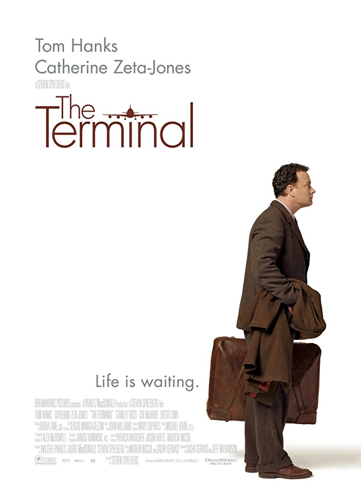
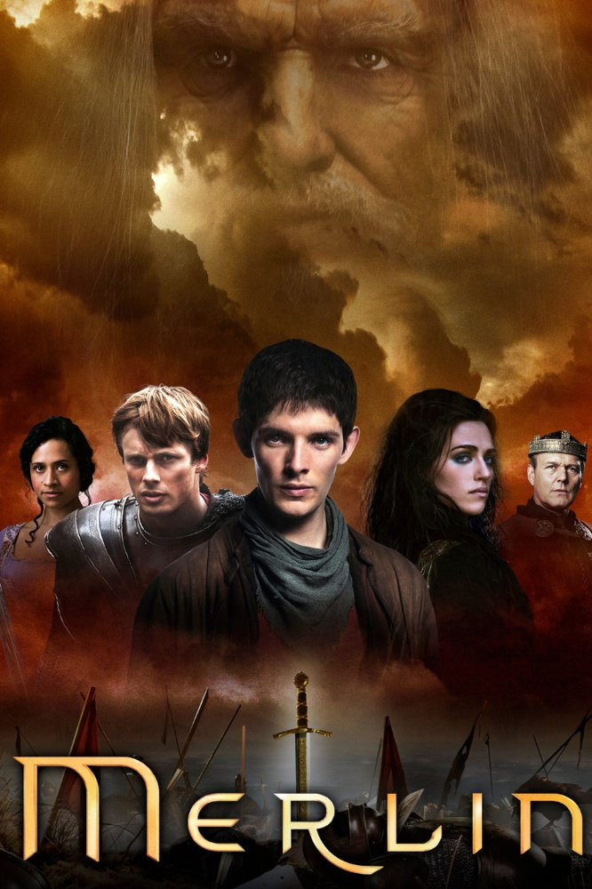

Harry Potter

Working Group
Director: Chris Columbus
Writers: J.K. Rowling (novel), Steve Kloves (screenplay)
Stars: Daniel Radcliffe, Rupert Grint, Richard Harris.
Storyline
This is the tale of Harry Potter, an ordinary 11-year-old boy serving as a sort of slave for his aunt and uncle who learns that he is actually a wizard and has been invited to attend the Hogwarts School for Witchcraft and Wizardry. Harry is snatched away from his mundane existence by Hagrid, the grounds keeper for Hogwarts, and quickly thrown into a world completely foreign to both him and the viewer. Famous for an incident that happened at his birth, Harry makes friends easily at his new school. He soon finds, however, that the wizarding world is far more dangerous for him than he would have imagined, and he quickly learns that not all wizards are ones to be trusted
Spiderman

Working Group
Director: Sam Raimi
Writers: Stan Lee (Marvel comic book), Steve Ditko
Stars: Tobey Maguire, Kirsten Dunst, Willem Dafoe
Storyline
Based on Marvel Comics' superhero character, this is a story of Peter Parker who is a nerdy high-schooler. He was orphaned as a child, bullied by jocks, and can't confess his crush for his stunning neighborhood girl Mary Jane Watson. To say his life is "miserable" is an understatement. But one day while on an excursion to a laboratory a runaway radioactive spider bites him... and his life changes in a way no one could have imagined. Peter acquires a muscle-bound physique, clear vision, ability to cling to surfaces and crawl over walls, shooting webs from his wrist ... but the fun isn't going to last. An eccentric millionaire Norman Osborn administers a performance enhancing drug on himself and his maniacal alter ego Green Goblin emerges. Now Peter Parker has to become Spider-Man and take Green Goblin to the task... or else Goblin will kill him. They come face to face and the war begins in which only one of them will survive at the end.Terminal
Working Group
Director: Steven Spielberg
Writers: Andrew Niccol (story), Sacha Gervasi (story)
Stars: Tom Hanks, Catherine Zeta-Jones, Chi McBride
Storyline
Victor Novarski reaches JFK airport from a politically unstable country. Due to collapse of his government, his papers are no longer valid in the airport, and hence he is forced to stay in the airport till the war cools down. He makes the airport his home and develops a friendship with the people who work there until he can leave.
Merlin
Working Group
Creators: Johnny Capps, Julian Jones, Jake Michie
Stars: John Hurt, Colin Morgan, Bradley James
Storyline
Young Merlin is a teenager, discovering and then learning to master his magical gift. Magister Gaius, King Uther Pendragon's learned court physician to whom he's assigned as humble page, teaches him medicine, coaches his magical self-study, and warns him of Uther's strong aversion to magic. Merlin becomes squire to the noble but imprudent crown prince, Arthur, whose fate is linked with Merlin.